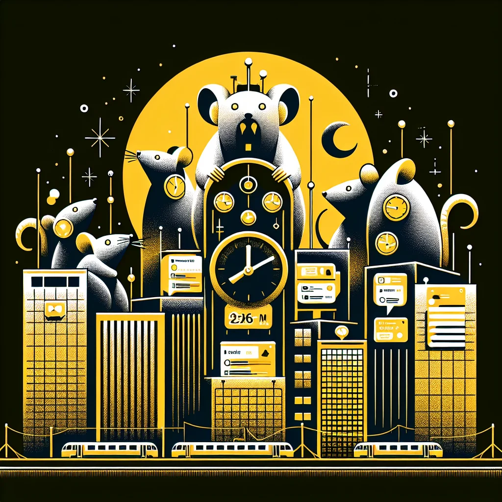

{kind=link}
{kind=link}
In the last year alone, insomnia cases rose by 30%, striking young professionals and elderly rats hardest. "I used to sleep like a log, but now I'm just a restless rodent," laments Remy, a local chef. The need for high productivity at workplaces and the omnipresent glare of social media have intensified these sleep disturbances, causing widespread concern.
Environmental factors exacerbate the issue, with urban noise pollution and endless artificial lighting keeping Ratopolis aglow around the clock. "It's hard to catch some Z's when the city's buzzing all night," remarks Luna, a university student. Such conditions not only lead to sleepless nights but also feed into the cycle of constant tiredness and compromised health.
The demand on Ratopolis' healthcare system is visible. Local health services strain under the influx of insomnia-related cases. Dr. Whiskers, a leading sleep specialist, notes, "Chronic sleep loss can weaken immune responses, heighten stress, and even impact mental health." The productivity of our industrious city is faltering, as fatigue frazzles daily operations.
Yet amidst the chaos, Ratopolis shows resilience through community and policy initiatives. City-wide campaigns now promote better sleep hygiene, like reducing caffeine consumption, setting regular bedtimes, and dimming lights before sleep. "We need to nip this in the bud before it becomes a real rat race," urges Mayor Whiskerton, advocating for measures to reduce the city's noise and glare.
Professor Squeak, a sociologist, highlights another layer of the issue, explaining how cultural shifts toward round-the-clock connectivity exacerbate the insomnia crisis. "The pressure not to disconnect is profound," she states, emphasizing the importance of fostering awareness and encouraging digital detoxes.
Some skeptics question if such interventions are enough. They argue that lifestyle changes might not suffice without addressing core urban development issues. Others point to similar cities that have turned to technological solutions like smart sleep aids or apps, which monitor and guide sleep patterns more effectively.
Reflecting on the history of Ratopolis, traditional sleep practices once prioritized rest as integral to productivity. Today's innovations must strike a balance, respecting the evolving needs of modern life, while reestablishing these foundational values.
Looking to the future, alleviating the insomnia epidemic holds the promise of improved public health and revitalized energetic communities. Potential technological advances, coupled with cultural realignments, could guide Ratopolis from this sleepless predicament.
As we navigate through this evolving narrative of urban sleeplessness, the challenge beckons — it is time, for every rat in Ratopolis, to reclaim peaceful nights and well-rested days. After all, the city's dreams, and indeed its future, rest upon how we tackle today’s insomnia crisis.
Looking for more in-depth news and exclusive content? Follow RAT TV for real-time updates, behind-the-scenes insights and the latest breaking news.
Insomnia Epidemic Grips Ratopolis: A Call for Action
The streets of Ratopolis are shifting into a nocturnal buzz, as a relentless insomnia epidemic takes hold, disrupting the sleep of rats across generations. Triggered by societal demands and environmental changes, this public health crisis demands urgent attention to restore balance and well-being in our beloved city.
2 minute read •
Comments

Comments